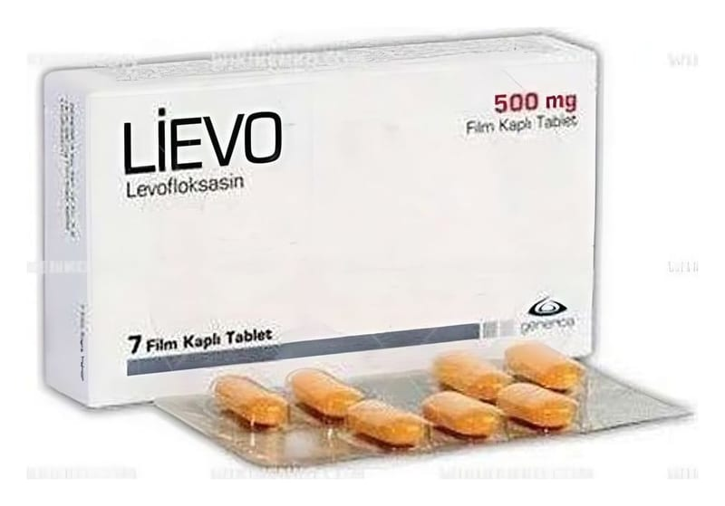

Lievo 500 mg Film Tablet, 7 Adet

Ne için kullanılır
KT · Bölüm 1LİEVO tablet ağızdan alınır. İlacınızın bir kutusu içinde her biri 500 mg levofloksasin içeren 7 adet film kaplı tablet bulunur. Doz ayarlamasını kolaylaştırmak için tablet çentiklidir. LİEVO bakterilere karşı etkili bir antibiyotiktir. Florokinolonlar adı verilen antibiyotik grubuna dahildir. Bakterilerin büyümesini, çoğalmasını engeller ve bakterilerin yok olmasını sağlar. LİEVO etkin maddesi olan levofloksasine karşı duyarlı olan bakterilerin neden olduğu enfeksiyonların tedavisinde kullanılır. Doktorunuz LİEVO’yu sizde aşağıdaki durumlardan biri bulunduğu için reçete etmiş olabilir: Bakterilerin neden olduğu yüz kemiklerinin içindeki hava boşluklarının akut iltihabı (sinüzit) Kronik bronş iltihabının akut alevlenmesi Toplumdan edinilmiş zatürree (pnömoni) İdrar yolları ve böbrekte gelişen iltihap (piyelonefrit) dahil, komplikasyonlu böbrek ve idrar yolu enfeksiyonları Prostat iltihabı Deri ve yumuşak doku enfeksiyonları: Abse (irin kesesi), selülit, furonkül, impetigo (derinin bulaşıcı, yüzeysel, mikrobik enfeksiyonu), piyoderma (irinli deri enfeksiyonu), yara enfeksiyonlarının neden olduğu komplikasyonsuz deri ve deri ekleri enfeksiyonları Havaya karışmış şarbon mikrobuna maruz kalma